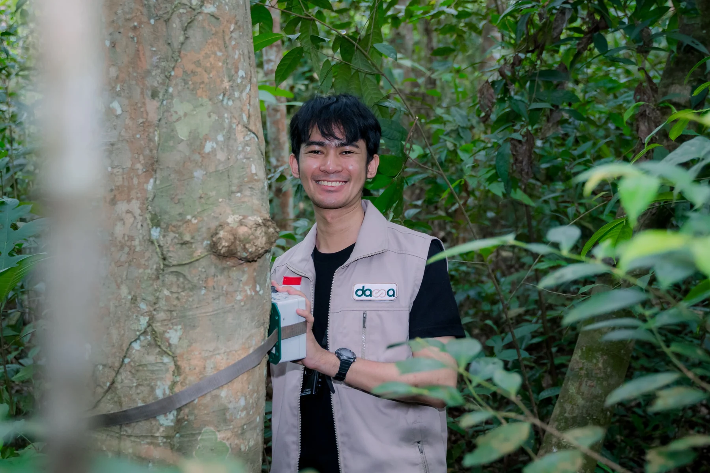
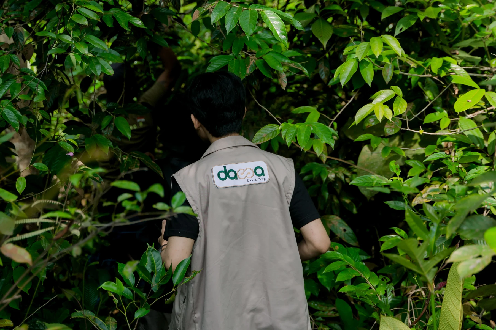

GHG accounting & ESG reporting
Developing inventory procedures and emissions calculation tools, coordinating ESG data, and supporting sustainability disclosures at company and group levels.
GHG inventory · Excel · GRI Standards
Jakarta, Indonesia · Open to remote opportunities
I’m Raihan, a forestry graduate and ESG professional. I work with spatial data, carbon accounting, and climate analysis to understand environmental change and support better decisions.
Forestry background. Geospatial tools. Industrial ESG experience.

A closer look at
changing landscapes.
01 / Selected work
A selection of personal projects and coursework in land cover, forest carbon, and environmental mapping.
Open a project to explore its maps, methods, and project materials.
02 / Professional focus
At PT Mitra Murni Perkasa, part of MMS Group Indonesia, I support ESG work for an RKEF nickel smelter, connecting environmental data with reporting and assessment needs.
Developing inventory procedures and emissions calculation tools, coordinating ESG data, and supporting sustainability disclosures at company and group levels.
GHG inventory · Excel · GRI Standards
Analyzing climate projections and spatial data to support physical risk assessments and climate disclosures with reference to IFRS S2.
Climate projections · QGIS · ArcGIS Pro · Google Earth Engine
Assessing gaps against IFC Performance Standards, supporting Environmental and Social Action Plans, and reviewing Indonesian regulations and supporting evidence.
IFC Performance Standards · ESAP · Regulatory review

03 / A little about me
I studied Forestry at Universitas Gadjah Mada, with a focus on Silviculture, and continued through the Forest Engineer Program. My early work involved mangrove research, nursery management, and forest rehabilitation.
That background now informs my work in carbon projects and industrial sustainability. I use geospatial analysis to examine land-use change, and work with ESG data, standards, and climate projections to support practical assessments.
I’m interested in remote opportunities in ESG, carbon accounting, climate analysis, and GIS where I can contribute careful analysis and continue building my technical skills.
Forest Engineer Program · 2024 · GPA 3.96/4.00
Bachelor’s Degree in Forestry · 2019–2023 · GPA 3.50/4.00
04 / Experience
From field research and rehabilitation to carbon projects and corporate sustainability.
Secondment from MMS Group Indonesia · Jakarta

Field experience
Field surveys, mangrove assessments, and nursery work give context to the datasets and environmental questions I work with.
05 / Contact
For opportunities in GIS, carbon, climate, and sustainability, feel free to get in touch.